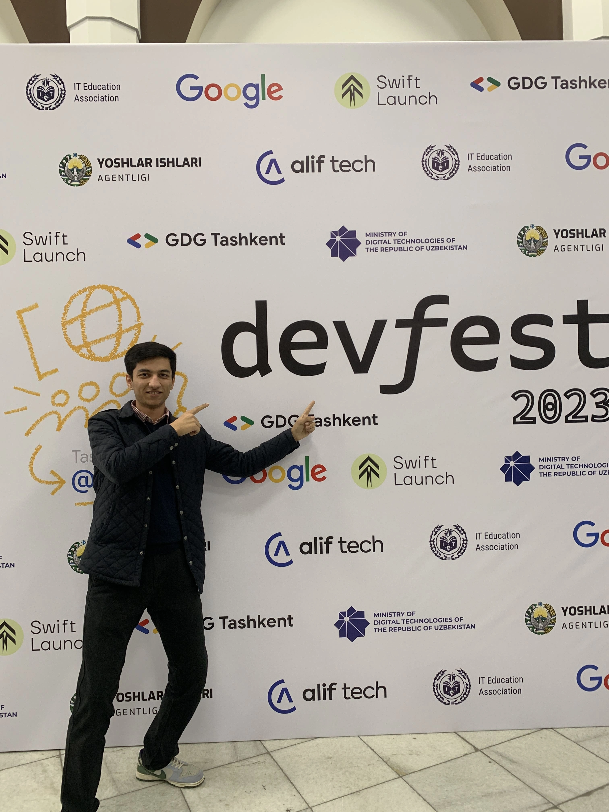
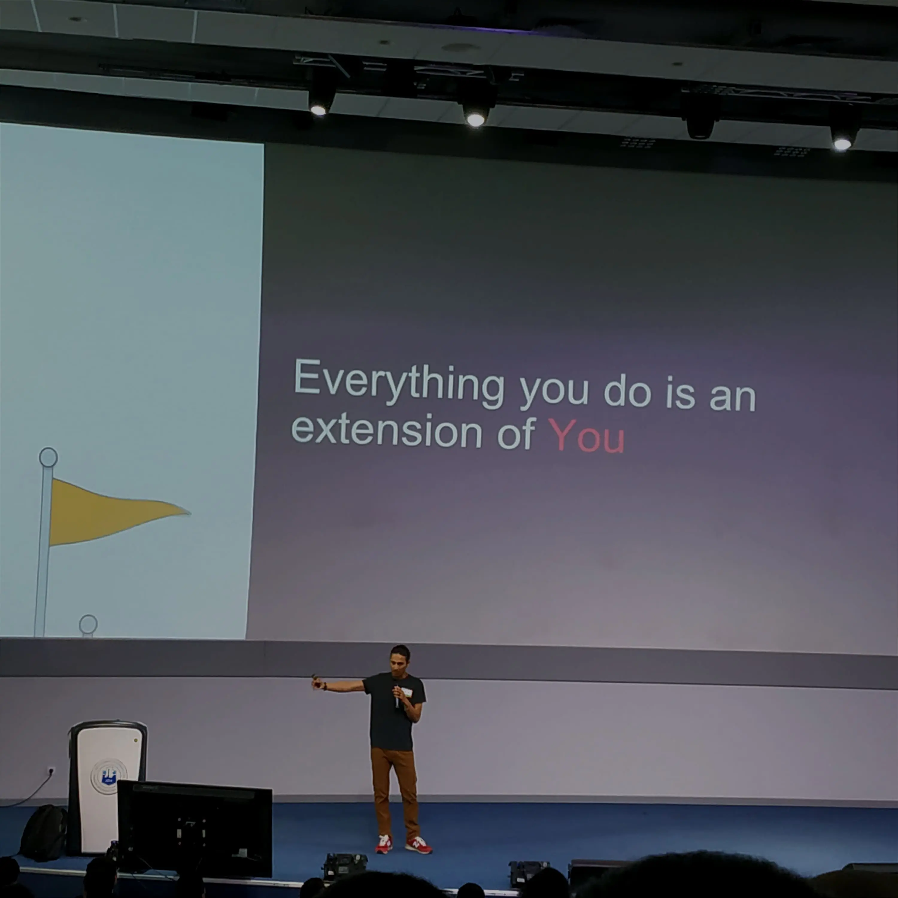
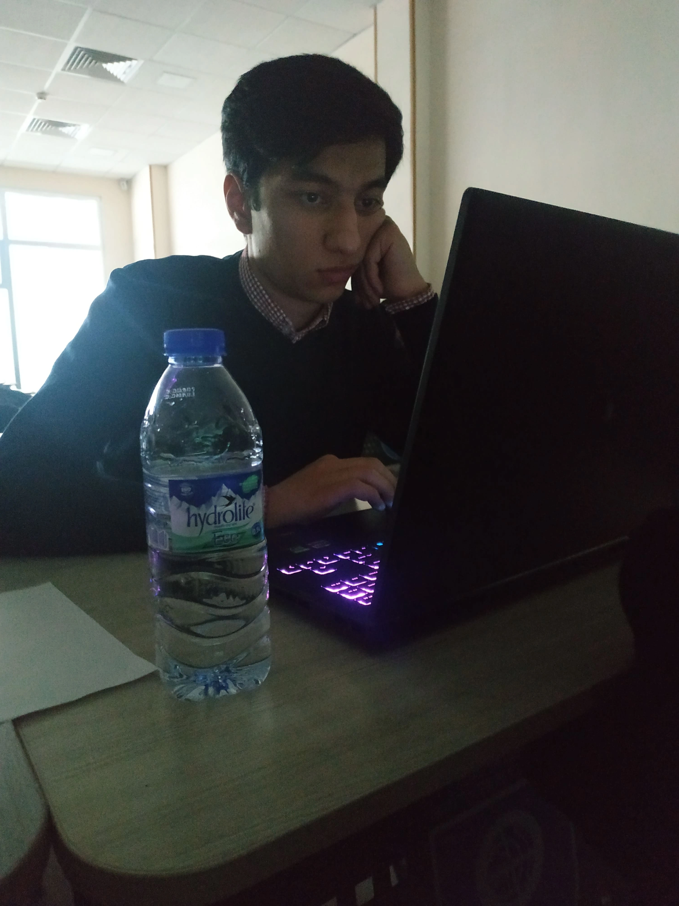

About Me
-
I'm Abdurakhmon, and I'm an enthusiastic web developer and a responsible person, hungry for a lot of knowledge and experience, I'm genuinely passionate about using my skills to create meaningful experiences through the development of products that can truly impact people's lives.
GDG Tashkent 2024. Tashkent -
In my free time, I pursue a diverse range of interests that keep me engaged and inspired. I'm an avid reader, constantly exploring new books that stimulate my imagination and expand my knowledge.
I'm also passionate about UI/UX design, where I focus on creating intuitive interfaces that prioritize user experience. Alongside this, I delve into front-end development, where I enjoy turning design concepts into interactive and functional websites.Google I/O extended. Tashkent -
I thoroughly enjoyed my time at Kimyo International University in Tashkent, where I gained a strong foundation in Information System Engineering. The collaborative environment fostered a sense of camaraderie amongst my groupmates, and I am grateful for the friendships and teamwork experiences I gained during my studies.
University. Tashkent